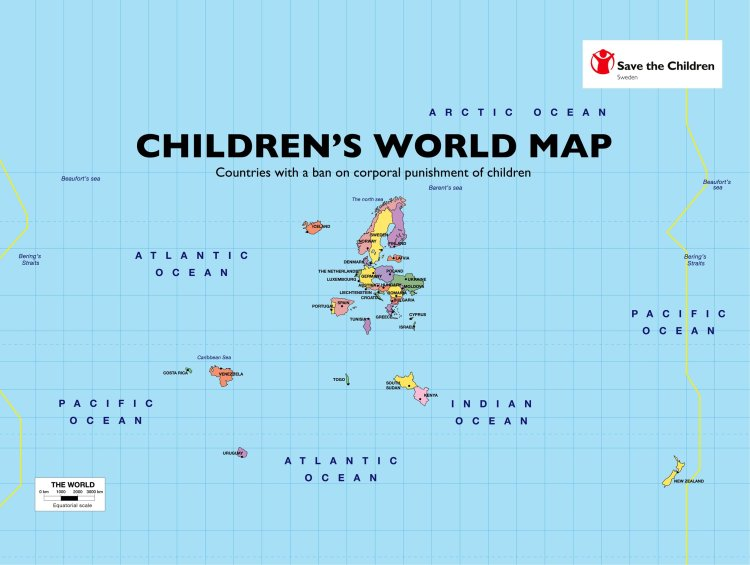
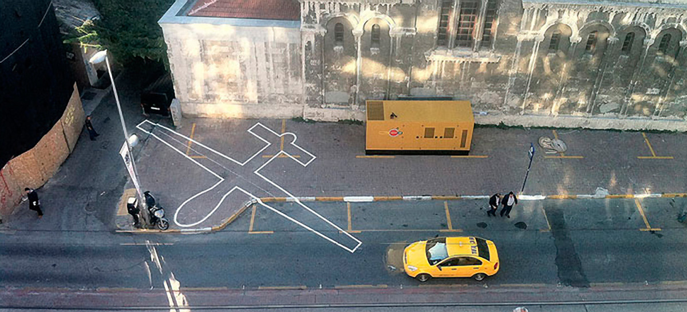
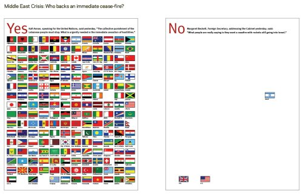
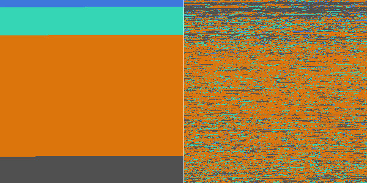
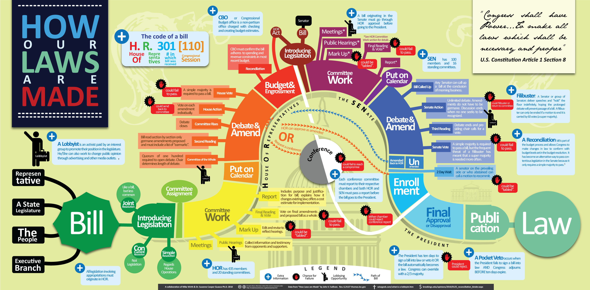
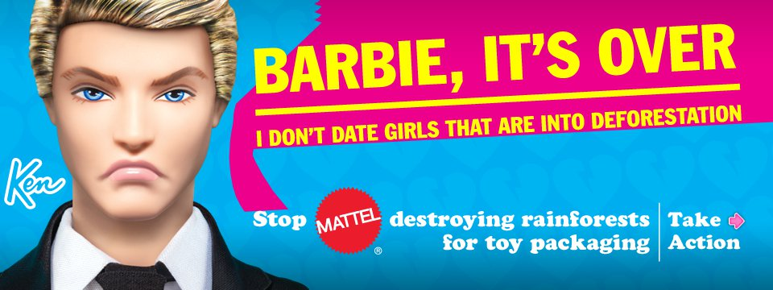

Visualizing for Data-Driven #Advocacy
The Three Building Blocks of a Campaign:
Targeted Advocacy, Really Good Data, & the Right Packaging
Advocacy Is: "Supporting a cause and getting others to support it as well".
Advocacy can consist of: media campaigns, publishing research or lobbying legislatures.
The ultimate goal is to FACILITATE CHANGE.
Why is Advocacy Important for Your Work?
How to be an Effective Advocate:
Trying to reach everyone at once is a recipe for failure...
Advocacy campaigns should have a clear target audience and a clear goal
Some Examples of Target Audiences are: Government officials, professional groups, students
How Can Data Support your Campaign?
Data can describe, inform, educate, persuade, & communicate critical information.
Why Use Visuals to Communicate Data?
People rarely read long reports full of complex data..
Nothing Sticks in People's Minds as much as an IMAGE
The way you FRAME images determines their communicative power...
Juxtapose
Subvert
Invert
Materialize
Compare
Contrast
Illuminate
Parody
